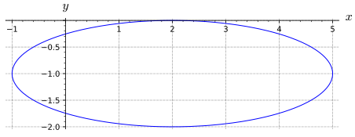
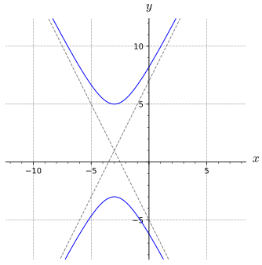
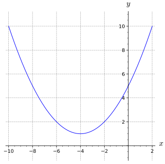
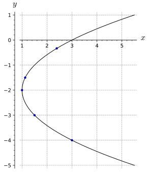

Section9.7Common Graphs in Two and Three Dimensions
Motivating Questions
What are some sample graphs in two and three dimensions that can be used throughout our study of multivariable ideas?
In this section, we will introduce some examples of graphs in two and three dimensions that have nice algebraic properties and a variety of interesting geometric features. For our preview activity, we will recall some properties of graphs and equations that will be useful in describing our new examples. While students may have different levels of experience with graphs like circles, parabolas, ellipses, and hyperbolas, we will focus our work on the correspondence between the algebraic presentations of these shapes and the important geometric features.
Preview Activity9.7.1.
For each of the following equations, you should:
Find all \(x\)-intercepts
Find all \(y\)-intercepts
Identify the shape of the graph (if you know it)
Identify all points where the graph will intersect with the vertical line \(x=2\)
Identify all points where the graph will intersect with the horizontal line \(y=-4\)
(a)
\(\frac{x^2}{9}+\frac{y^2}{25}=1\)
(b)
\(\frac{x}{3}+\frac{y}{5}=1\)
(c)
\(\frac{y^2}{4}-\frac{x^2}{1}=1\)
(d)
\(x=2y^2\)
(e)
\(\frac{y^2}{9}-\frac{x^2}{25}=0\)
Subsection9.7.1Coordinate Transformations
We have seen how the distance formula leads to the equation of a sphere and how the idea of flat one and two dimensional graphs gave rise to lines and planes. In this section, we will introduce some other curves and surfaces that will be used throughout the rest of this text as examples. These objects will allow us to have graphs with a variety of geometric features while still being algebraically simple. The next activity will go over a couple of basic coordinate transformation ideas that will be helpful in generalizing our common graphs.
Activity9.7.2.Translation of Coordinates.
In this activity we will look at how to translate coordinate systems, which means to use a new coordinate system with axes parallel to to the original set of axes and the same scale. In other words, the new coordinate system has a new origin but does not change the way coordinates are measured. This is very useful to simplify the equation of a graph by making the graph’s center the new origin.
(a)
On the axes below, draw and label the point \(P=(4,-1)\text{.}\) With a different color, draw a new set of axes that are centered at \(P\) and label these axes \(x^*\) and \(y^*\text{.}\) The \(x^*\) and \(y^*\) should parallel to the \(x\) and \(y\) axes and use the same scale.
(b)
Use the plot of the \(x^*\) and \(y^*\) axes above to give the \((x^*,y^*)\)-coordinates for each of the following points:
\(\displaystyle (x,y)=(4,-1)\)
\(\displaystyle (x,y)=(0,0)\)
\(\displaystyle (x,y)=(3,-2)\)
\(\displaystyle (x,y)=(6,3)\)
Remember that the locations of these points should not change, but rather the values of the measurements used to describe the location will change.
(c)
Generalize your work for part 9.7.2.b and write \(x^*\) and \(y^*\) in terms of \(x\text{,}\)\(y\text{,}\) and the coordinates of new center \((4,-1)\text{.}\)
Using the same coordinate systems as in part 9.7.2.a, give the \((x,y)\)-coordinates of the following points:
\(\displaystyle (x^*,y^*)=(0,0)\)
\(\displaystyle (x^*,y^*)=(4,-1)\)
\(\displaystyle (x^*,y^*)=(-5,7)\)
\(\displaystyle (x^*,y^*)=(6,3)\)
(e)
Generalize your work for part 9.7.2.d and write \(x\) and \(y\) in terms of \(x\text{,}\)\(y\text{,}\) and the coordinates of new center \((4,-1)\text{.}\)
In this activity, we look at how transform the coordinates of points when changing the scale of your coordinate system.
(a)
While walking your dog, you notice that your dog takes three steps for every step of yours. When you sit down at home you realize that your coordinate system for your house is different than your dog’s. You decide to make the origin of both your coordinate system and your dog’s to be the entrance to your kitchen. Your dog’s bed is eight of your steps south and four steps west of the entrance to the kitchen. The dog’s water bowl is 5 of your steps north and 3 steps east from the entrace to your kitchen. The front door of your house is 15 of your steps south and 9 steps east of the entrance to the kitchen.
Draw a set of axes and plot the location of your dog’s bed, water bowl, and the front door in terms of your steps from the origin (the entrance to your kitchen).
(b)
State what the coordinates of your dog’s bed, water bowl, and the front door in terms of your dog’s steps from the origin will be.
(c)
If your dog’s favorite toy is 17 dog steps east and 5 dog steps north of the entrance to the kitchen and your dog’s collar is 13 dog steps south and 7 dog steps west, give the coordinates of your dog’s toy and collar in terms of your steps.
(d)
If you denote the coordinates in your steps the \((x,y)\)-coordinate system and your dog’s steps with \((x',y')\) coordinates, give the location in both coordinate systems for your dog’s bed, water bowl, the front door, your dog’s favorite toy, and your dog’s collar. Generalize your findings into equations that tranform between \((x,y)\)- and \((x',y')\)-coordinates.
The results of the previous activities are probably not suprising but should offer some insight into why some aspects of coordinate transformations seem backwards. This is because the transformations are about converting back to the measurement of a different coordinate system.
Subsection9.7.2Conic Sections
You may have seen the ideas of coordinate transformation that were central to Activity 9.7.2, but hopefully you see precisely where the algebraic transformations come from and how they correspond to simple geometric transformations. For our basic shapes in 2D, we will give a very brief definition for the shape, but the focus of this presentation will be about applying transformations to a basic shape in order to generalize the possible usage of these shapes.
A circle is the set of points that are a fixed distance (called the radius) away from a specific point (called the center). Most often, circles are introduced with the center at the origin and the radius given by a constant \(R\text{.}\) This means that a point \((x,y)\) that is on the circle will satisfy
, which is often called the standard form of the circle. The standard form is convenient to use because the information needed to graph the circle can be read from this form without needing more algebra. For instance, the circle given by
would have center \((2,-3)\) and radius \(\sqrt{6}\text{.}\) Notice that the transformation equations from Activity 9.7.2 show up in this example as we move a circle from being centered at the origin(\(x^2+y^2=R^2\)) to a point \((h,k)\) (\((x-h)^2+(y-k)^2=R^2\)).
Definition9.7.1.
An ellipse is the set of all points such that the sum of the distances from the point \((x,y)\) to a pair of distinct points (called foci) is a fixed constant. In the interact below, you can use the slider to change the location on the ellipse being displayed. You should see how as you move around the ellipse, the sum of the lengths of the blue and red segments remains constant, as shown compared to the green segment (which is a fixed length).
Figure9.7.2.A plot of an ellipse with foci in green
While the definition of the ellipse given above has some great applications in engineering, orbital mechanics, and optics, we will focus on the ellipse as a transformation of a circle. While this is not obvious and the details take a little while to prove, any ellipse in the plane can be obtained by transforming a circle (through translation, horizontal/vertical coordinate stretches that are not the same as each other, and rotations of the coordinate systems).
Activity9.7.4.
(a)
What transformation is done to convert between the circle given by \(x^2+y^2=1\) and the graph of \(\frac{x^2}{4}+y^2=1\text{?}\) You should be specific about how the graph of \(\frac{x^2}{4}+y^2=1\) is different than the graph of \(x^2+y^2=1\text{.}\)
Hint.
Look at the \(x\)-intercepts of each equation
(b)
What transformations are done to convert between the circle given by \(x^2+y^2=1\) and the graph of \(\frac{x^2}{4}+\frac{y^2}{9}=1\text{?}\) You should be specific about how the graph of \(\frac{x^2}{4}+\frac{y^2}{9}=1\) is different than the graph of \(x^2+y^2=1\) and specify if the transformations need to be done in a particular order.
(c)
What transformations are done to convert between the circle given by \(x^2+y^2=1\) and the graph of \(\frac{(x+2)^2}{4}+\frac{(y-3)^2}{9}=1\text{?}\) You should be specific about how the graph of \(\frac{(x+2)^2}{4}+\frac{(y-3)^2}{9}=1\) is different than the graph of \(x^2+y^2=1\) and specify if the transformations need to be done in a particular order.
(d)
Draw a plot of \(\frac{(x+2)^2}{4}+\frac{(y-3)^2}{9}=1\) and label the center of your plot and the points that demonstrate how far the ellipse is stretched in the vertical and horizontal directions.
(e)
The graph of the equation \(9x^2+16y^2=400\) is an ellipse. Convert this equation to the form \(\frac{(x-h)^2}{a^2}+\frac{(y-k)^2}{b^2}=1\) and use the idea of transformations from above to graph this ellipse and label all extreme points on your plot.
(f)
The graph of the equation \(4x^2+y^2+24x-2y+21=0\) is an ellipse. Convert this equation to the form \(\frac{(x-h)^2}{a^2}+\frac{(y-k)^2}{b^2}=1\) and use the idea of transformations from above to graph this ellipse and label all extreme points on your plot.
(g)
Give the equation of the ellipse shown in Figure 9.7.3

Figure9.7.3.A plot of an ellipse
Definition9.7.4.
A hyperbola is the set of all points such that the difference of the distances from the point \((x,y)\) to a pair of distinct points (called foci) is a fixed constant.
Figure9.7.5.A plot of an hyperbola with foci in green
In the interact above, you can see how as you move around the hyperbola, the difference of the lengths of the blue and red segments remains constant (shown in green). Additionally, you can see that a hyperbola has asymptotic behavior in that as you approach the edges of the plot, the hyperbola will get very close to the asymptote lines (shown with a dashed line).
Activity9.7.5.
(a)
The most basic equation for a hyperbola is \(x^2-y^2=1\text{.}\) Make a plot of the hyperbola given by \(x^2-y^2=1\text{.}\) You should draw and label the asymptotes (\(y=\pm x\)) and the vertices,the points on the hyperbola that are closest to the center which are the \(x\)-intercepts in this case.
(b)
What transformation is done to convert between the hyperbolas given by \(x^2-y^2=1\) and the graph of \(\frac{x^2}{4}-y^2=1\text{?}\) You should be specific about how the graph of \(\frac{x^2}{4}-y^2=1\) is different than the graph of \(x^2-y^2=1\text{.}\)
Hint.
Look at the \(x\)-intercepts of each equation
(c)
What transformation is done to convert between the hyperbolas given by \(x^2-y^2=1\) and the graph of \(y^2-x^2=1\text{?}\) You should be specific about how the graph of \(y^2-x^2=1\) is different than the graph of \(x^2-y^2=1\text{.}\)
Hint.
Look at both intercepts of each equation
(d)
What transformations are done to convert between \(x^2-y^2=1\) and the graph of \(\frac{x^2}{4}-\frac{y^2}{9}=1\text{?}\) You should be specific about how the graph of \(\frac{x^2}{4}-\frac{y^2}{9}=1\) is different than the graph of \(x^2-y^2=1\) and specify if the transformations need to be done in a particular order.
(e)
Draw a plot of \(\frac{(x+2)^2}{4}-\frac{(y-3)^2}{9}=1\) and label the center, the vertices of the hyperbola, and the asymptote lines. You will need to apply the transformations from the previous part to the asymptotes of the base hyperbola (given by \(y = \pm x\)) in order to get the equations of the transformed asymptotes.
(f)
The graph of the equation \(9x^2-16y^2=400\) is an hyperbola. Convert this equation to the form \(\frac{(x-h)^2}{a^2}-\frac{(y-k)^2}{b^2}=1\) and use the idea of transformations from above to graph this hyperbola and label the center, the vertices of the hyperbola, and the asymptote lines.
(g)
The graph of the equation \(4x^2-y^2+24x-2y+21=0\) is an hyperbola. Convert this equation to the form \(\frac{(x-h)^2}{a^2}-\frac{(y-k)^2}{b^2}=1\) and use the idea of transformations from above to graph this hyperbola. Remember to plot the vertices and asymptotes of the transformed hyperbola.
(h)
Give the equation of the hyperbola shown in Figure 9.7.6

Figure9.7.6.A plot of an hyperbola
Definition9.7.7.
A parabola is the set of all points that are the same distance from a point (called the focus) and a line (called the directrix).
Figure9.7.8.A plot of an parabola with the focus in green and the directrix shown as a dashed line
In the interact above, you can see how as you move around the parabola, the lengths of the blue and red segments remains the same as each other. The point that is half way between the focus and the directrix is referred to as the center and the vertex of the parabola.
Activity9.7.6.
(a)
Make a plot of the parabola given by \(x=y^2\text{.}\) You should draw and label the vertex and four other points on the parabola.
(b)
Draw a plot of the graph for \(2x=y^2\) and label the vertex and four other points. What transformation is done to convert between the parabola given by \(x=y^2\) and the graph of \(2x=y^2\text{?}\) You should be specific about how the graph of \(2x=y^2\) is different than the graph of \(x=y^2\text{.}\)
(c)
Draw a plot of the graph for \(y=x^2\) and label the vertex and four other points on the parabola. What transformation is done to convert between the parabolas given by \(y=x^2\) and the graph of \(x=y^2\text{?}\) You should be specific about how the graph of \(x=y^2\) is different than the graph of \(y=x^2\text{.}\)
(d)
What transformations are done to convert between \(x=y^2\) and the graph of \(\frac{x-1}{2}=\left(\frac{y+2}{3}\right)^2\text{?}\) You should be specific about how the graph of \(\frac{x-1}{2}=\left(\frac{y+2}{3}\right)^2\) is different than the graph of \(x=y^2\) and specify if the transformations need to be done in a particular order.
(e)
Draw a plot of \(\frac{x-1}{2}=\left(\frac{y+2}{3}\right)^2\) and label the vertex and four other points on the parabola.
(f)
The graph of the equation \(x^2-8x-8y+8=0\) is an parabola. Convert this equation to the form \(\left(\frac{x-h}{a}\right)^2=\frac{y-k}{b}\) and use the idea of transformations from above to graph this parabola. Be sure to label the vertex and four other points on the parabola.
(g)
Give the equation of the parabola shown in Figure 9.7.9

Figure9.7.9.A plot of an parabola
Subsection9.7.3Cylinder Surfaces
Our previous examples in this section show how to create a variety of interesting curves on the \(xy\)-plane. What happens if we consider these same equations in three dimensions?
Example9.7.10.
Let’s look at an example like \((x-1)=\frac{(y+2)^2}{2}\text{.}\) If we consider the graph of \((x-1)=\frac{(y+2)^2}{2}\) in 2D, then we get a parabola centered at \((1,-2)\text{.}\)

A plot of \((x-1)=\frac{(y+2)^2}{2}\) in the \(xy\)-plane with five points highlighted
Figure9.7.11.A plot of \((x-1)=\frac{(y+2)^2}{2}\) in the \(xy\)-plane with five points highlighted
If we want to look at the graph of \((x-1)=\frac{(y+2)^2}{2}\) in 3D, we are considering all of the \((x,y,z)\) points that will satisfy this equation. So if we pick \(x\) and \(y\) values that satisfy \((x-1)=\frac{(y+2)^2}{2}\text{,}\) then ANY choice of \(z\) will satisfy the given question. So for the each of the highlighted points on Figure 9.7.11, we can extend the graph of \((x-1)=\frac{(y+2)^2}{2}\) parallel to the \(z\)-axis. Figure 9.7.12 shows how the points on the parabola (in black) can be extended to include any \(z\) coordinate.
Figure9.7.12.A plot of \((x-1)=\frac{(y+2)^2}{2}\) generating curve and several rulings
Extending all points from the circle \((x-1)=\frac{(y+2)^2}{2}\) in the \(xy\)-plane parallel to the \(z\)-axis will give a surface. This kind of surface is called a cylinder surface, the two dimensional curve you use to make the surface is called the generating curve, and the lines that extend in the direction of the missing variable are called rulings. In Figure 9.7.13, the surface is plotted in blue, the generating curve in black, and the rulings in green. This surface is called a parabolic cylinder surface because the generating curve is a parabola.
Figure9.7.13.A plot of the cylinder surface \((x-1)=\frac{(y+2)^2}{2}\) with generating curve and several rulings
Activity9.7.7.
(a)
Draw the graph of \(2x-y+1=0\) on the \(xy\)-plane.
(b)
Draw the graph of \(2x-y+1=0\) in \(xyz\)-space. This is called a linear cylinder surface.
(c)
Draw the graph of \((x-1)^2+(y+2)^2=4\) in \(xyz\)-space. This is called a right-circular cylinder surface.
(d)
Draw the graph of \(\frac{x^2}{9}+\frac{z^2}{4}=1\) in \(xyz\)-space. This is called an elliptic cylinder surface.
(e)
Draw the graph of \(x^2-y^2=1\) in \(xyz\)-space. This is called an hyperbolic cylinder surface.
Subsection9.7.4Quadric Surfaces
In this section, we will look at a set of surfaces with algebraic equations that are quadratic in \(x\text{,}\)\(y\text{,}\) and \(z\text{.}\) This will give us a category of example surfaces that are algebraically simple but exhibit a variety of interesting characteristics.
Activity9.7.8.
For this activity, we will be looking at a variety properties that will help us draw a graph of the surface described by \(\frac{x^2}{4}+\frac{y^2}{9}-\frac{z^2}{1}=1\text{.}\)
(a)
Find all \(x\)-, \(y\)-, and \(z\)-intercepts of \(\frac{x^2}{4}+\frac{y^2}{9}-\frac{z^2}{1}=1\text{.}\)
Hint.
The \(x\)-intercepts are where \(y=0\) and \(z=0\text{.}\)
(b)
Find an equation for the curve given by the intersection of \(\frac{x^2}{4}+\frac{y^2}{9}-\frac{z^2}{1}=1\) with the \(xy\)-plane. Draw a plot of this intersection on the \(xy\)-plane (this should be a 2D plot).
(c)
Find an equation for the curve given by the intersection of \(\frac{x^2}{4}+\frac{y^2}{9}-\frac{z^2}{1}=1\) with the \(yz\)-plane. Draw a plot of your intersection on the \(yz\)-plane (this should be a 2D plot).
(d)
Find an equation for the curve given by the intersection of \(\frac{x^2}{4}+\frac{y^2}{9}-\frac{z^2}{1}=1\) with the \(xz\)-plane. Draw a plot of your intersection on the \(xz\)-plane (this should be a 2D plot).
(e)
Find equations for the curve given by the intersection of \(\frac{x^2}{4}+\frac{y^2}{9}-\frac{z^2}{1}=1\) with the each of the following fundamental planes. You should state the shape and any other characteristics (like center or direction) for each of these intersections.
\(\displaystyle z=1\)
\(\displaystyle z=-2\)
\(\displaystyle z=\sqrt{3}\)
\(\displaystyle x=3\)
\(\displaystyle x=-1\)
(f)
Draw each of these intersections on the proper fundamental planes in 3D.
(g)
Which of the following surface plots will correspond to \(\frac{x^2}{4}+\frac{y^2}{9}-\frac{z^2}{1}=1\text{?}\) You can determine this by comparing the features on your previous part to these options.
Figure9.7.15.A plot surfaces to select from
Activity9.7.9.
(a)
Find equations for the curve given by the intersection of \(\frac{x^2}{4}-\frac{y^2}{9}-\frac{z^2}{1}=1\) with the each of the following fundamental planes. You should state the shape and any other characteristics (like center or direction) for each of these intersections.
\(\displaystyle z=0\)
\(\displaystyle y=0\)
\(\displaystyle x=0\)
\(\displaystyle z=1\)
\(\displaystyle y=-2\)
\(\displaystyle z=\sqrt{3}\)
\(\displaystyle x=3\)
\(\displaystyle x=-1\)
(b)
Which of the following surface plots will correspond to \(\frac{x^2}{4}-\frac{y^2}{9}-\frac{z^2}{1}=1\text{?}\) You can determine this by comparing the features on your previous part to these options.
Figure9.7.16.A plot surfaces to select from
Activity9.7.10.
(a)
Find equations for the curve given by the intersection of \(\frac{x^2}{4}+\frac{y^2}{9}+\frac{z^2}{1}=1\) with the each of the following fundamental planes. You should state the shape and any other characteristics (like center or direction) for each of these intersections.
\(\displaystyle z=0\)
\(\displaystyle y=0\)
\(\displaystyle x=0\)
\(\displaystyle z=1\)
\(\displaystyle z=-2\)
\(\displaystyle y=\sqrt{3}\)
\(\displaystyle x=3\)
\(\displaystyle x=-1\)
(b)
Which of the following surface plots will correspond to \(\frac{x^2}{4}+\frac{y^2}{9}+\frac{z^2}{1}=1\text{?}\) You can determine this by comparing the features on your previous part to these options.
Figure9.7.17.A plot surfaces to select from
The surfaces given by \(\frac{x^2}{4}+\frac{y^2}{9}+\frac{z^2}{1}=1\text{,}\)\(\frac{x^2}{4}+\frac{y^2}{9}-\frac{z^2}{1}=1\text{,}\) and \(\frac{x^2}{4}-\frac{y^2}{9}-\frac{z^2}{1}=1\) are examples of quadric surfaces. Quadric surfaces are the surfaces generated by polynomials that are quadratic in the three coordinate variables \(x\text{,}\)\(y\text{,}\) and \(z\text{.}\) There are six main shapes of quadric surfaces; Below are plots of each of the main shapes with the algebraic form used to describe each shape. Note that all of these examples are oriented along the \(z-axis\) and centered at the origin, but in our later work, we will often consider versions of these oriented along other coordinate directions with the center not at the origin.
Quadric Surfaces.
The following is a list of the six types of quadric surfaces and their general algebraic form centered at the origin with stretches of \(a\text{,}\)\(b\text{,}\) and \(c\) in the respective coordinate directions. Each of these is oriented along the \(z\)-axes (when possible).
In Chapter 11, we will talk about surfaces where one coordinate can be expressed as a function of the others. This is an extension of the idea that graphs that pass the vertical line test can be expressed with \(y\) as a function of \(x\text{.}\) For instance, in the plot of the saddle surface Figure 9.7.18, any vertical line (parallel to the \(z\)-axis) will intersect the saddle surface at only one place, thus the saddle surface can be expressed with \(z\) as a function of \(x\) and \(y\text{.}\) This is not surprising since the saddle surface is given by \(\frac{x^2}{a^2}-\frac{y^2}{b^2}=z\text{.}\)
Compare this to the graph of a Hyperboloid of 1-Sheet in Figure 9.7.18, where a line that is parallel to the \(z\)-axis will intersect our surface at two places. Lines parallel to the \(x\)- or \(y\)-axes will also intersect the hyperboloid of one sheet in more than one place. This means that you cannot express the graph of a hyperboloid of one sheet with none of the coordinates as a function of the other two. Algebraically, this corresponds to there being more than one solution when you try to solve the equation \(\frac{x^2}{a^2}+\frac{y^2}{b^2}-\frac{z^2}{c^2}=1\) for one variable. In particular, the multiple solutions come from needing to consider the positive and negative square roots. We will return to this idea in Chapter 11.
Subsection9.7.5Summary
Translated Conic Sections have the following forms:
Ellipse: \(\frac{(x-h)^2}{a^2}+\frac{(y-k)^2}{b^2}=1\) with center \((h,k)\text{,}\) vertices \((h\pm a,k)\) and covertices \((h,k\pm b)\)
Hyperbola: \(\frac{(x-h)^2}{a^2}-\frac{(y-k)^2}{b^2}=1\) with center \((h,k)\text{,}\) vertices \((h\pm a,k)\text{,}\) and asymptotes \((y-k)=\frac{b}{a}(x-h)\)
Parabola: \((x-h)=A(y-k)^2\) with vertex/center \((h,k)\)
Other versions of these forms that are oriented vertically will have the roles of \(x\) and \(y\) switched.
Cylinder surfaces are described algebraically by an equation involving only two coordinate variables. Geometrically, a cylinder surface is generated by a curve/graph in the coordinate plane involving the two coordinate variables in the equation and stretching this generating curve parallel to the missing coordinate variable’s axis.
Quadric surfaces are a category of surfaces created by quadratic equations in \(x\text{,}\)\(y\text{,}\) and \(z\text{.}\) Quadric surfaces have six typical shapes: ellipsoid, hyperboloid of one sheet, hyperboloid of two sheets, elliptic paraboloid, hyperbolic paraboloid (saddle surface), and cone. The same coordinate transformations that generalize conic sections can be applied to quadric surfaces.
Exercises9.7.6Exercises
1.
(a) Describe the set of points whose distance from the y-axis equals the distance from the xz-plane.
A cylinder opening along the y-axis
A cylinder opening along the x-axis
A cone opening along the x-axis
A cone opening along the y-axis
A cylinder opening along the z-axis
A cone opening along the z-axis
(b) Find the equation for the set of points whose distance from the y-axis equals the distance from the xz-plane.
\(\displaystyle x^2 + z^2 = r^2\)
\(\displaystyle y^2 + z^2 = r^2\)
\(\displaystyle z^2 = x^2 + y^2\)
\(\displaystyle x^2 + y^2 = r^2\)
\(\displaystyle y^2 = x^2 + z^2\)
\(\displaystyle x^2 = y^2 + z^2\)
2.
For each surface, decide whether it could be a bowl, a plate, or neither. Consider a plate to be any fairly flat surface and a bowl to be anything that could hold water, assuming the positive z-axis is up.
\(\displaystyle x + y + z = 1\)
\(\displaystyle z = 1 - x^2 - y^2\)
\(\displaystyle z = - \sqrt{ 4 - x^2 - y^2 }\)
\(\displaystyle z = 3\)
\(\displaystyle z = x^2 + y^2\)
Subsection9.7.7Notes to Instructors and Dependencies
This section includes a lot of basic transformation ideas that students may have a range of experience with. We included these activities as a way to make sure that students have some exposure and they get to practice simple algebraic procedures that will be used with more complexity later in the text. A more thorough approach to the conic sections can be found at (insert link to IBL materials here). You may want to have students work through activities like Activity 9.7.2 and Activity 9.7.3 on their own during times where you don’t have a preview activity to prepare for new material.